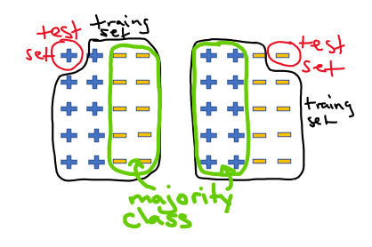
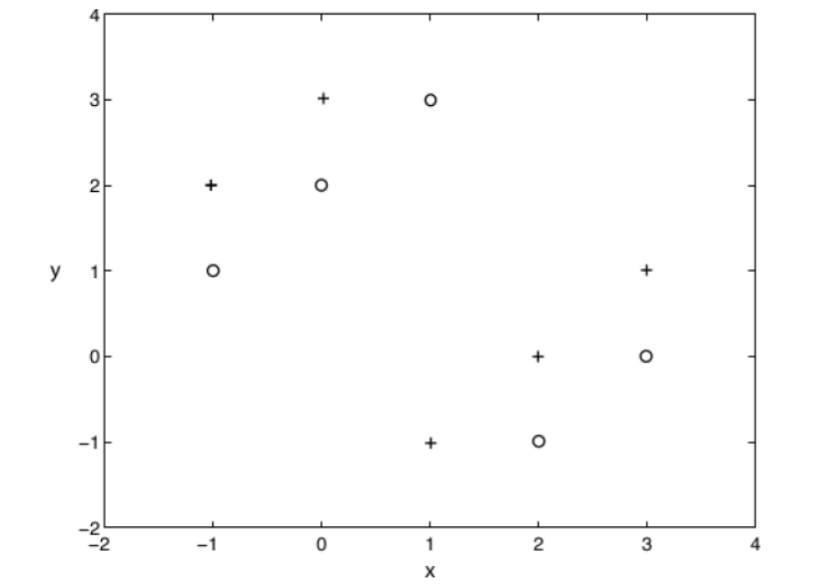
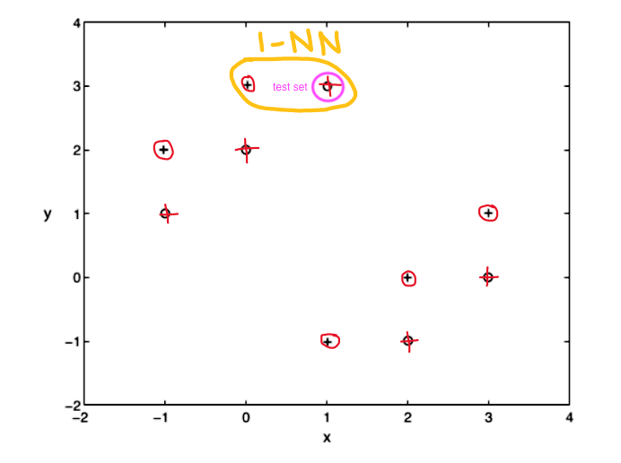
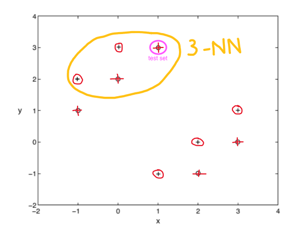

Assignment 2
- Suppose our dataset consists of 100 positive examples and 100 negative examples. Our classifier constantly outputs the majority class of the training set (breaking tie arbitrarily). Then the leave-one-out cross validation error on the dataset is about 50%. Is this statement TRUE or FALSE? Please explanation accordingly.
This statement is FALSE. Scaling down the example to illustrate, with 10 positive and 10 negative examples we see that each time we select training and test set we have either 1 positive or 1 negative example as the test set and then the training set has N positive and N-1 negative or vice versa, N negative and N-1 positive. This leaves the majority class of the training set as the class that the test set is not. Then the test set will be classified wrong each time the leave-one out validation error is calculated.

If the error is 1 when false and 0 when true, that means error rate = \(\frac{1}{n}\sum MSE_{i}\)
with n = 200 and 1*n test sets classified wrong, the sum of the test error is 200, leaving the error rate to be \(\frac{1}{200}*200\) = 1 or 100% error rate
- Consider a K-nearest neighbor classifier applied to the following dataset with six examples and four features:
| example(\(e\)) | \(x_{1}\) | \(x_{2}\) | \(x_{3}\) | \(x_{4}\) | \(y\) |
|---|---|---|---|---|---|
| \(e_{1}\) | 3 | 10 | 2 | 11 | Red |
| \(e_{2}\) | 17 | -17 | 9 | -1 | Blue |
| \(e_{3}\) | -4 | 9 | -2 | -1 | Red |
| \(e_{4}\) | 4 | 0 | 2 | -5 | Blue |
| \(e_{5}\) | 8 | -1 | 6 | -12 | Blue |
| \(e_{6}\) | 19 | 3 | 23 | 14 | Red |
- [17 point] For a new testing example, x1 = 0.0, x2 = 0.0, x3 = 0.0, x4 = 0.0, write the distance to each of the training examples and indicate the prediction made by 1-NN and 3-NN using Euclidean distance. Remember to take the square root when computing the Euclidean distance.
calculating Euclidean distance:
gives:
| example(\(e\)) | calculation | dist |
|---|---|---|
| \(e_{1}\) | \(\sqrt{(3-0)^{2}+(10-0)^{2}+(2-0)^{2}+(11-0)^{2}} = \sqrt{234}\) | 15.30 |
| \(e_{2}\) | \(\sqrt{(17-0)^{2}+(-17-0)^{2}+(9-0)^{2}+(1-0)^{2}} = \sqrt{660}\) | 25.69 |
| \(e_{3}\) | \(\sqrt{(-4-0)^{2}+(9-0)^{2}+(-2-0)^{2}+(-1-0)^{2}} = \sqrt{102}\) | 10.10 |
| \(e_{4}\) | \(\sqrt{(4-0)^{2}+(0-0)^{2}+(2-0)^{2}+(-5-0)^{2}} = \sqrt{45}\) | 6.71 |
| \(e_{5}\) | \(\sqrt{(8-0)^{2}+(-1-0)^{2}+(6-0)^{2}+(-12-0)^{2}} = \sqrt{245}\) | 15.65 |
| \(e_{6}\) | \(\sqrt{(19-0)^{2}+(3-0)^{2}+(23-0)^{2}+(14-0)^{2}} = \sqrt{1095}\) | 33.09 |
1-NN = \(e_{4}\) = Blue, so the new testing example is classified as Blue
3-NN = new testing example is classified majority of \(e_{4}\), \(e_{3}\), \(e_{1}\) = Blue, Red, Red, so the new testing example is classified as Red
- [17 point] For a new testing example, x1 = 0.0, x2 = 0.0, x3 = 0.0, x4 = 0.0, write the distance to each of the training examples and indicate the prediction made by 1-NN and 3-NN using Manhattan distance (i.e., L1 norm with \(||x||_{1} = ∑^{4}_{i=1}|x_{i}|\)); see page 14 of the slides of Linear Algebra).
calculating Manhattan distance gives:
| example(\(e\)) | calculation | dist |
|---|---|---|
| \(e_{1}\) | \(|(3-0)| + |(10-0)| + |2-0| + |11-0|\) | 26 |
| \(e_{2}\) | \(|(17-0)| + |(-17-0)| + |9-0| + |-1-0|\) | 44 |
| \(e_{3}\) | \(|(-4-0)| + |(9-0)| + |-2-0| + |-1-0|\) | 16 |
| \(e_{4}\) | \(|(4-0)| + |(0-0)| + |2-0| + |-5-0|\) | 11 |
| \(e_{5}\) | \(|(8-0)| + |(-1-0)| + |6-0| + |-12-0|\) | 27 |
| \(e_{6}\) | \(|(19-0)| + |(3-0)| + |23-0| + |14-0|\) | 59 |
1-NN = \(e_{4}\) = Blue, so the new testing example is classified as Blue 3-NN = new testing example is classified majority of \(e_{4}\), \(e_{3}\), \(e_{1}\) = Blue, Red, Red, so the new testing example is classified as Red
- [33 pt]. Consider the following dataset with + and o classes.

For each data point, consider a K-nearest neighbor classifier that is trained by using all the other data, except for that data point, and then used to predict the label for the withheld data point.
For leave-one-out cross validation error rate we take each sample, predict the label based on \(k\) nearest neighbors, find the test error for each test set, and then take the average of all error rates.
error rate = \(\frac{1}{n}\sum MSE_{i}\)
because there are 2 classes, test error is \(1\) if false prediction and \(0\) if true prediction.
- [15 pt] What is the leave-one-out cross validation error rate when K = 1?

All test examples are predicted wrong for \(k = 1\) so test error = \(1n\) = 10
averaging to get error rate = \(\frac{1}{10}*10\) = 1 or 100%
- [18 pt] What is the leave-one-out cross validation error rate when K = 3?

For \(k = 3\) also, no test examples classes are predicted correctly so none match the true class of the sample. So the same error rate applies:
\(\sum\) test error = \(1n\) = 10
averaging to get error rate = \(\frac{1}{10}*10\) = 1 or 100%